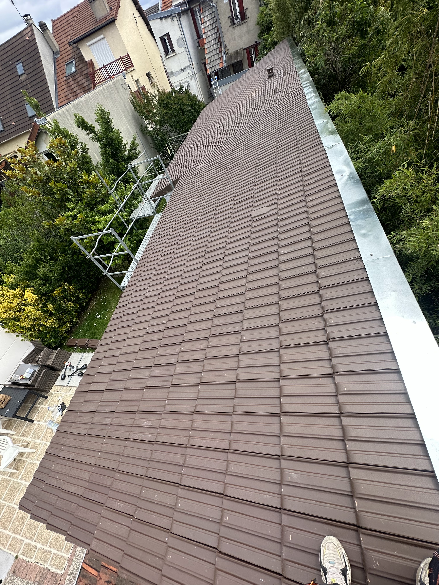
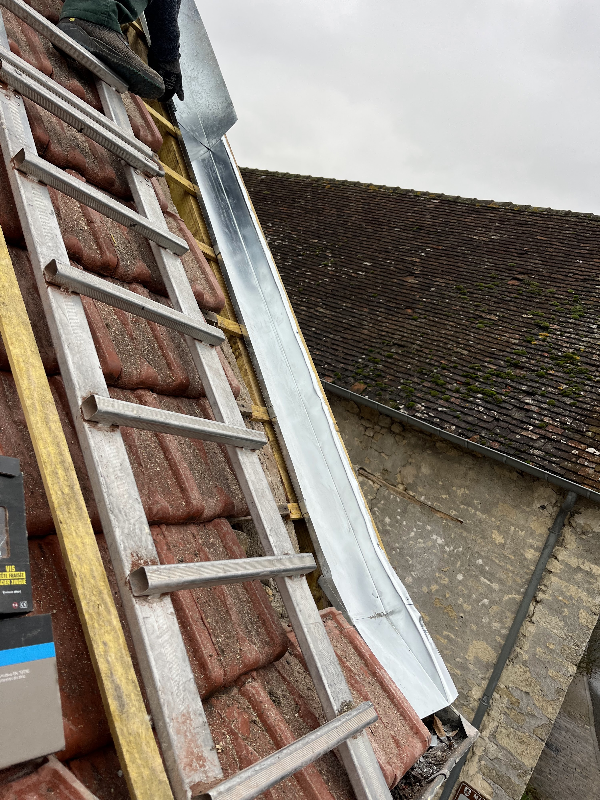

Nos Projets
Réalisations à Lizy-sur-Ourcq
Quelques exemples de toitures nettoyées et rénovées par notre équipe d'artisans.



À la jonction de l'Ourcq et de la Marne, Lizy-sur-Ourcq abrite des habitations exposées aux brumes et à l'humidité constante de la vallée. Mr. Duval y intervient pour assainir, réparer et sublimer vos toitures.
Devis gratuit à Lizy-sur-Ourcq
Estimation sous 48h — déplacement offert
Tous travaux d'entretien et de réhabilitation de toiture pour maintenir votre maison au sec toute l'année.
Restauration des toits en tuiles ou ardoises fragilisés par les variations climatiques des rives de l'Ourcq.
Nettoyage en profondeur des mousses, moisissures et lichens, traitement hydrofuge préventif longue durée.
Application de résines protectrices pour imperméabiliser les tuiles poreuses et empêcher l'infiltration d'eau.
Réparation et pose de tuyaux de descente de gouttières, noues, chéneaux et habillage de rive.
Le sérieux et le savoir-faire d'un artisan local pour un toit parfaitement protégé.
Couverture légale assurant tous les travaux lourds de réfection et d'étanchéité de toiture.
Nos traitements imperméabilisent et préservent la toiture tout en la laissant respirer pour éviter la condensation interne.
Aucun coût caché ni frais de déplacement facturé pour les diagnostics et devis à Lizy-sur-Ourcq.
Quelques exemples de toitures nettoyées et rénovées par notre équipe d'artisans.


Lizy-sur-Ourcq est une charmante bourgade traversée par le canal de l'Ourcq et la rivière du même nom. Cet environnement verdoyant engendre d'importantes variations d'humidité. Les toits y sont soumis au développement précoce de lichens noirs et de mousses épaisses qui fragilisent la structure même des tuiles en terre cuite.
Mr. Duval met à votre disposition son savoir-faire et ses équipements professionnels pour diagnostiquer, nettoyer et pérenniser votre toiture. Nous intervenons rapidement pour tous travaux d'étanchéité, traitement curatif/préventif et rénovation.
Méthode efficace pour retirer les mousses sans abîmer le support.
Pulvérisation de produits professionnels pour bloquer la réapparition végétale.
Protège contre la porosité des tuiles causée par le temps et la météo.
Zinguerie sur mesure pour assurer l'évacuation de l'eau sans débordement.
Nos réponses aux questions fréquentes pour maintenir vos toitures en bon état dans la région de Lizy.
Légalement non, mais techniquement indispensable. Sans nettoyage, l'accumulation de mousses retient l'eau, favorise les infiltrations lors des fortes pluies et peut briser les tuiles pendant le gel en hiver. L'entretien régulier évite des frais de réfection complets très onéreux.
Oui. Nous proposons des traitements hydrofuges colorés (résines de haute qualité) qui non seulement protègent vos tuiles de la porosité mais leur redonnent également une teinte éclatante (ardoise, tuile, marron) similaire à celle d'origine.
Nous garantissons la disparition totale de la mousse le jour de notre départ. L'effet préventif de nos traitements anti-mousse et hydrofuges protège activement le support sur plusieurs années. Nous assurons un suivi sérieux et restons à votre entière disposition.